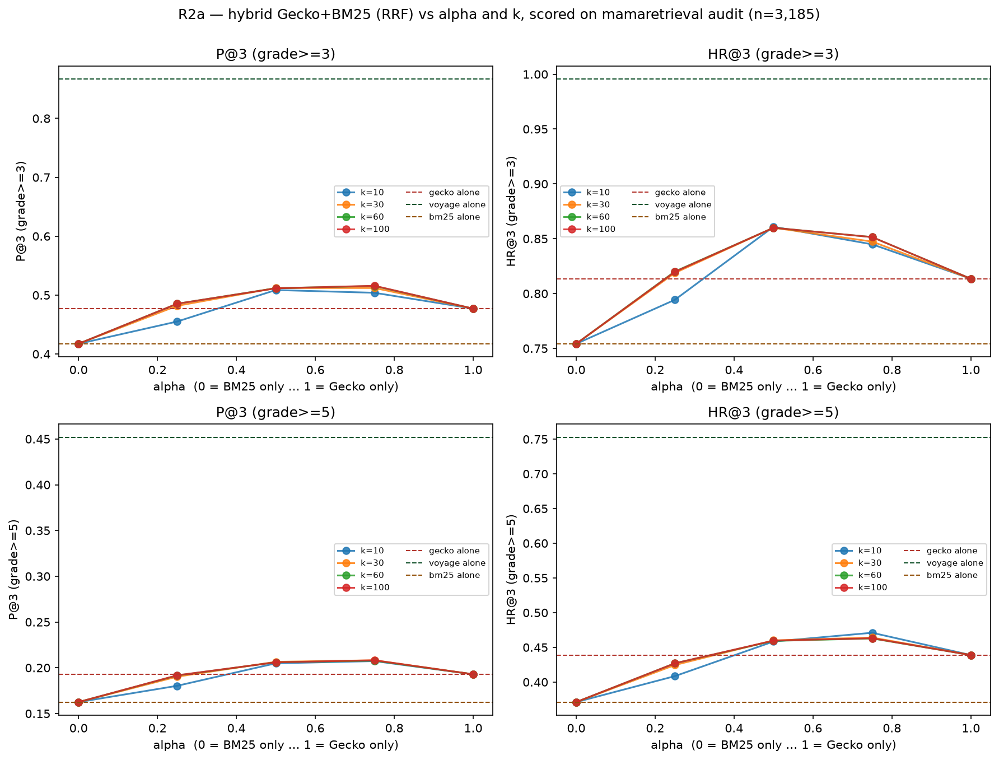
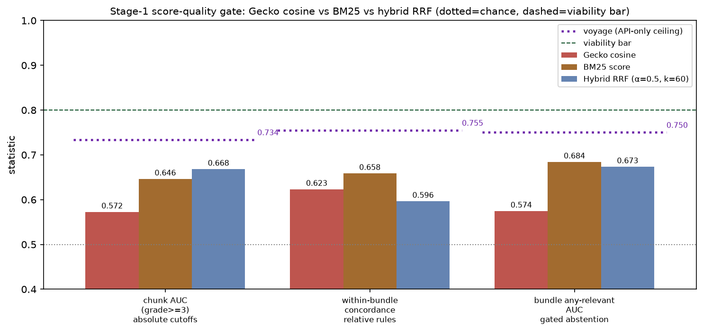

2026-06-13 · config-v0.2.0 · branch feat/r2-retriever-upgrade-20260613 ·
step R2a of the R2 plan
Fusing BM25 into Gecko via reciprocal-rank fusion is a real but modest win, and
essentially free to deploy (SQLite FTS5). Best config (alpha≈0.5–0.75) lifts
bundle precision P@3 from 0.477 → 0.516 and hit rate HR@3 from 0.814 → 0.860 —
but closes only ~10% of the Gecko→voyage gap and does not move
the strict-content miss (P@3≥5: 0.193 → 0.208). Worth adopting as a cheap
improvement; not sufficient on its own — R2c (better embedder) / C1 (corpus)
remain necessary for the structural gap. On thresholdability
(the R1 question, re-run here): the hybrid does not revive it —
all three Stage-1 gate statistics stay below the 0.80 viability bar, as does the
voyage ceiling. BM25's raw score is the best threshold-like signal measured
(bundle-AUC 0.684), but only marginally; R1's "no usable threshold" verdict holds.
Method
Weighted reciprocal-rank fusion over Gecko's and BM25's published audit top-20
rankings: score(c) = α·[c∈gecko]/(k+rank_gecko) + (1−α)·[c∈bm25]/(k+rank_bm25),
fused top-3 scored against the mamaretrieval 0–6 judgments (n=3,185 queries).
α=1 is Gecko-only, α=0 BM25-only. Pure offline arithmetic on
rankings.parquet — both retrievers already ran in the audit and 100%
of each one's top-20 is judged, so no embedding, GPU, or new judging. Baselines
reproduce the known audit numbers exactly (Gecko P@3 0.477, BM25 0.417, voyage
0.867), confirming the join.
Note on k: the RRF constant k is not
the number of retrieved documents. It is a damping term added to the rank in the
denominator that controls how steeply a chunk's weight falls off with worse rank
(small k → the top hit dominates; large k → ranks count nearly
equally). The retrieval depths are separate and fixed: each retriever's top-20 in,
fused top-3 out. k=60 is the field's conventional default, and the result
is flat in it (P@3 moves ±0.01 across k=10–100).
Results

Four metrics vs α, one line per RRF constant k; dashed lines are the
single-retriever baselines. k barely matters (0.504→0.516 across k=10–100); α is
the real knob, optimal around 0.5–0.75.
Config (k=60)
P@3 ≥3
HR@3 ≥3
P@3 ≥5
HR@3 ≥5
BM25 only (α=0)
0.417
0.754
0.163
0.371
Gecko only (α=1)
0.477
0.814
0.193
0.439
Hybrid α=0.5
0.512
0.860
0.206
0.459
Hybrid α=0.75
0.515
0.852
0.208
0.463
voyage ceiling
0.867
0.996
0.452
0.753
Readings
Fusion beats both parents. At α≈0.5–0.75 the hybrid exceeds
Gecko-alone and BM25-alone on every metric — the classic RRF benefit, driven
by BM25's lexical complementarity (drug names, doses, exact terms Gecko's
embedding blurs). HR@3 gains most (+4.6 pp): more bundles contain at least
one relevant chunk.
The absolute gap stays large. Best P@3 0.516 closes ~10% of
the 0.477→0.867 Gecko→voyage gap. Fusion reshuffles what these two retrievers
already surface; it cannot add content neither found.
The strict-content miss is unfixed. P@3≥5 moves
only 0.193→0.208. BM25 doesn't surface the complete/actionable chunks Gecko
misses either — consistent with the audit's flat strict pool-recall. Only a
better embedder (R2c) or richer corpus (C1) addresses this.
α is the knob, k is not. Optimal α is Gecko-leaning but
strictly interior (0.5–0.75), so BM25 genuinely contributes; k=10–100 changes
P@3 by ~0.01. A deployable default: α=0.5, k=60.
Recommendation
Adopt the hybrid (α≈0.5, FTS5 BM25 + Gecko, RRF k=60) — a
cheap, on-device-feasible lift, strongest on hit rate. Gate on the end-to-end
checks per the R2 plan before shipping: the M1 MCQ ±RAG rerun and a SAQ A/B
(offline retrieval metrics alone don't gate adoption).
Do not expect it to fix RAG-hurts on its own. The structural
gap and the strict-content miss remain — proceed to R2b (rerank ceiling) and
scope R2c (embedder bake-off).
Does the hybrid revive thresholding?
R1 killed thresholding on Gecko's cosine scores. Both alternatives carry
a different score — BM25's lexical score, and the hybrid's RRF fused score, each
rank-/frequency-based and bounded, so potentially more comparable across queries.
Running the R1 §6 Stage-1 gate on all three native scores (hybrid at the
deployable α=0.5, k=60). Gecko reproduces R1's cosine numbers exactly
(0.572 / 0.623 / 0.574), a cross-check that the computation is sound.

The three Stage-1 statistics, Gecko cosine vs BM25 score vs hybrid
RRF. Dotted gray = chance (0.5); dashed green = the 0.80 viability bar; purple
dotted = voyage-4-large, the API-only ceiling (0.734 / 0.755 / 0.750).
Statistic (rule family it gates)
Gecko cosine
BM25 score
Hybrid RRF
chunk AUC ≥3 (absolute cutoffs)
0.572
0.646
0.668
within-bundle concordance (relative rules)
0.623
0.658
0.596
bundle any-relevant AUC (gated abstention)
0.574
0.684
0.673
BM25's raw score is the most thresholdable of the three —
best on two of three statistics, including the gated-abstention signal
(bundle AUC 0.684). Lexical match frequency is a more honest relevance-
confidence cue than embedding cosine: a chunk that shares the query's exact
terms is more reliably on-point than one that is merely near it in vector
space.
Fusion trades within-bundle signal for cross-query separation.
The hybrid wins chunk AUC (0.668 — RRF scores are comparable across queries,
which cosine wasn't) but its within-bundle concordance (0.596) drops below
both parents: blending two rank systems blurs the fine ordering
inside a bundle. The best query-level gate signal is BM25's, not the
hybrid's.
None reaches the 0.80 viability bar — and neither does the ceiling.
The strongest threshold-like signal anywhere — BM25's bundle-level gated
abstention ("skip RAG when the top BM25 score is low") at 0.684 — is the most
promising we've measured, yet still marginal, not viable. Even voyage-4-large,
the API-only quality ceiling, sits below the bar on all three (0.734 / 0.755 /
0.750), so a deployable retriever clearing it is unlikely on current evidence.
R1's core finding survives: no score grades usefulness within the
retrieved set well enough for a relative rule (best concordance 0.658).
Takeaway: neither alternative revives thresholding to viability, but both beat
Gecko's cosine, and BM25's lexical score is the single best relevance-confidence
signal measured. The most promising rule is a marginal query-level RAG on/off
gate driven by BM25's top score. If R2c/R2d later push a bundle-level AUC past
~0.80, that gate becomes worth an end-to-end test; today it is not.